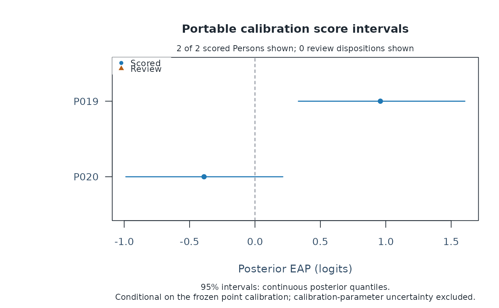

Review and plot portable fixed-calibration scores
Source:R/api-calibration-methods.R
mfrm_calibration_score_methods.RdThese methods provide the first review surface for the result returned by
score_mfrm_calibration(). print() gives a compact batch disposition,
summary() exposes readable score and review tables, and plot() shows
conditional score uncertainty or numerical review quantities without
refitting a model.
Usage
# S3 method for class 'mfrm_calibration_score'
summary(object, digits = 3L, ...)
# S3 method for class 'mfrm_calibration_score'
print(x, ...)
# S3 method for class 'summary.mfrm_calibration_score'
print(x, ...)
# S3 method for class 'mfrm_calibration_score'
plot(
x,
type = c("interval", "precision", "edge_mass"),
top_n = 40L,
sort_by = c("estimate", "sd", "person"),
label_review = TRUE,
main = NULL,
draw = TRUE,
preset = c("standard", "publication", "compact", "monochrome"),
...
)Arguments
- object, x
An
mfrm_calibration_scorereturned byscore_mfrm_calibration().- digits
Number of decimal places in the summary.
- ...
Reserved for generic compatibility.
- type
One of
"interval","precision", or"edge_mass".- top_n
Maximum number of scored Persons shown. Review rows are selected first when truncation is necessary. Use
Infto show all.- sort_by
Selection priority after review rows: absolute estimate, posterior SD, or Person identifier.
- label_review
Whether review points are labelled in the precision and edge-mass views. Interval plots always label the displayed Persons.
- main
Optional plot title.
- draw
If
TRUE, draw with base R graphics. The returnedmfrm_plot_datais available invisibly in either case.- preset
Visual preset:
"standard","publication","compact", or"monochrome".
Value
print() returns its input invisibly. summary() returns a
summary.mfrm_calibration_score containing
overview, estimates, review, row_review, settings, and notes.
When adaptive integration was requested and scored rows exist, it also
retains unrounded quadrature_review and a compact quadrature_overview.
plot() returns an mfrm_plot_data with the selected plotting table,
selection accounting, unplotted Person dispositions, interpretation
guidance, and plotting settings.
Details
The default interval plot shows posterior EAP estimates and central
intervals. type = "precision" plots the number of valid response rows
against posterior SD. type = "edge_mass" compares posterior mass on the
two outer quadrature nodes with the recorded review threshold. Review
dispositions are highlighted in every view.
These are score-batch review displays, not calibration-fit diagnostics.
Posterior SDs and intervals are conditional on the frozen point calibration
and its recorded prior. They exclude calibration-parameter uncertainty.
Persons with no valid responses have no score coordinate and are retained
in summary(x)$review and in the plot payload's
unplotted_dispositions component.
The summary object retains every returned score and review disposition. Its estimates table preserves the available estimate and uncertainty basis columns, calibration identifiers, scoring algorithm and requested interval level when extracted or written to CSV. The interval level is not rounded. Older score results recover these fields from their recorded settings when re-summarized. Saved grid-based intervals retain their original endpoints; printed results and interval plots explain that their posterior mass can differ from the requested level. Its print method shows at most ten rows from each table so routine console output stays compact. Base and ggplot2 renderers distinguish scored and review states by shape as well as colour.
Examples
# \donttest{
dat <- load_mfrmr_data("example_core")
ids <- unique(dat$Person)
training <- dat[dat$Person %in% ids[1:18], , drop = FALSE]
fit <- fit_mfrm(
training, "Person", c("Rater", "Criterion"), "Score",
model = "RSM", method = "MML", quad_points = 5, maxit = 20
)
q_review <- mml_quadrature_sensitivity(
fit, training, quad_points = c(5, 7), theta_points = 41
)
fit <- q_review$fits$q7
calibration <- freeze_mfrm_calibration(
validate_mfrm_calibration(extract_mfrm_calibration(
fit, quadrature_review = q_review
))
)
new_rows <- dat[dat$Person %in% ids[19:20], , drop = FALSE]
scores <- score_mfrm_calibration(calibration, new_rows)
summary(scores)
#> mfrmr Portable Calibration Score Summary
#> Calibration: mfrmr-calibration-v1:rsm:mml:20260922082123261849
#> Model / estimator: RSM / MML
#> Persons: 2 scored (0 requiring review); 0 not scored
#>
#> Posterior estimates (2 of 2)
#> P019: estimate 0.959, SD 0.328, interval [0.331, 1.605], scored
#> P020: estimate -0.389, SD 0.311, interval [-0.988, 0.213], scored
#>
#> Response-row disposition
#> 32 input; 32 scored; 0 omitted; 0 refused; missing-response policy: error
#>
#> Interval interpretation
#> 95% intervals: continuous posterior quantiles.
#> Posterior SDs and intervals are conditional on the frozen point calibration
#> and exclude calibration-parameter uncertainty.
plot(scores, type = "interval")

plot(scores, type = "edge_mass", draw = FALSE)
# }